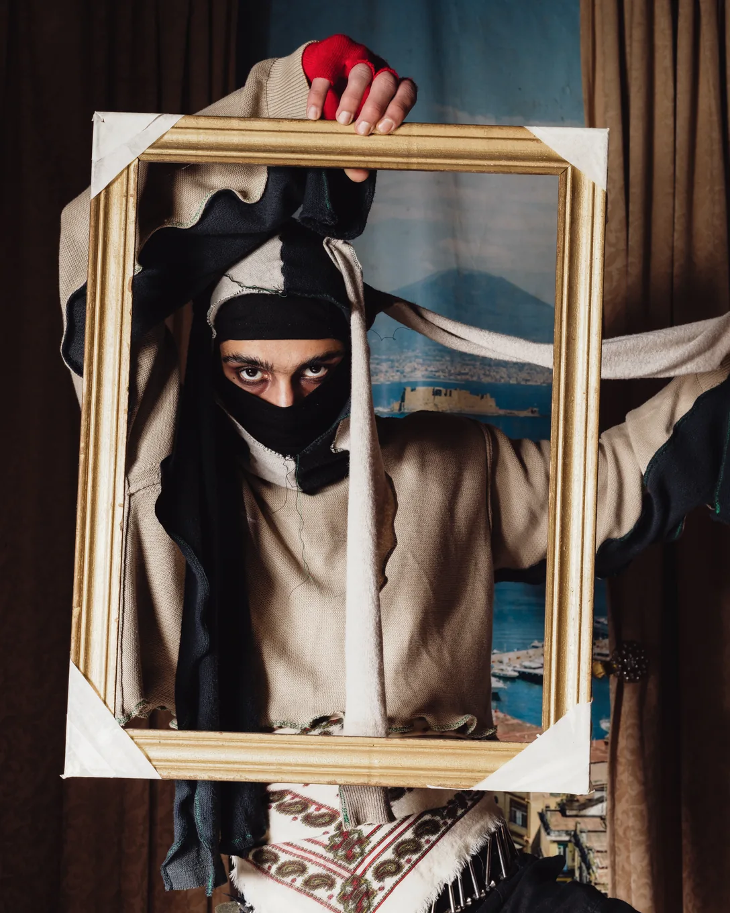
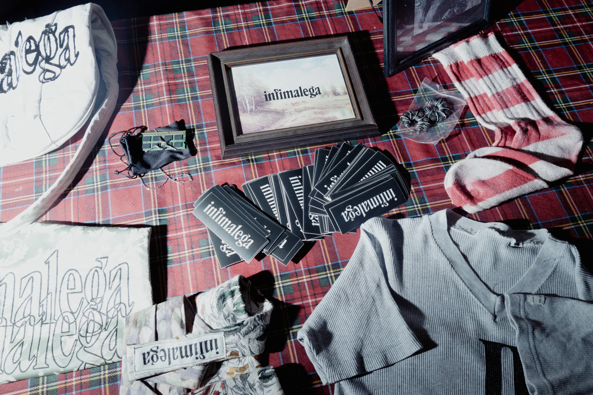
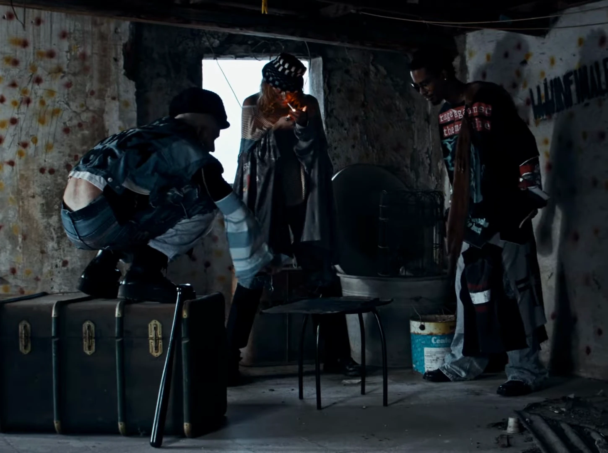
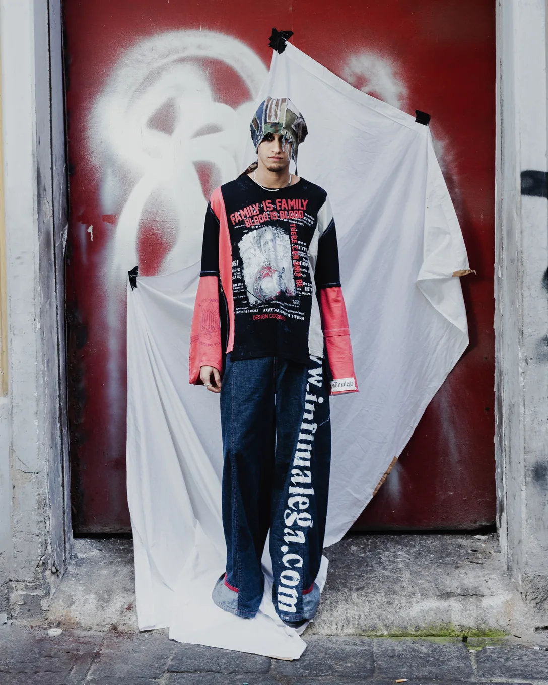
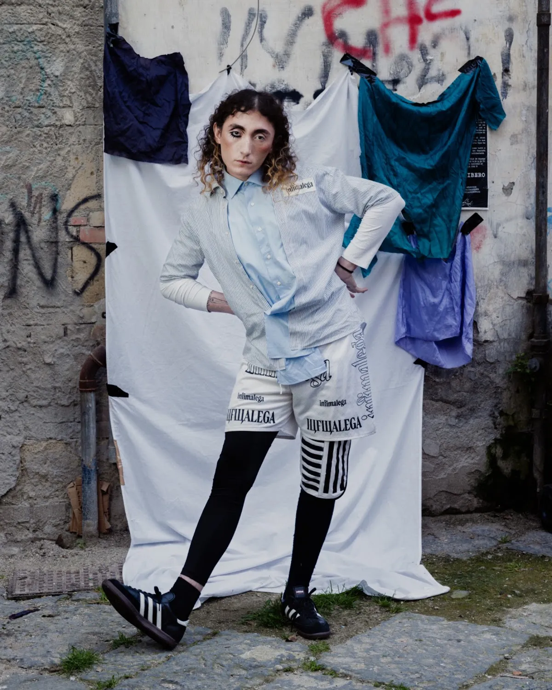
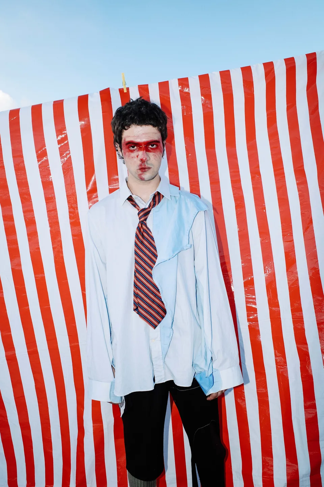
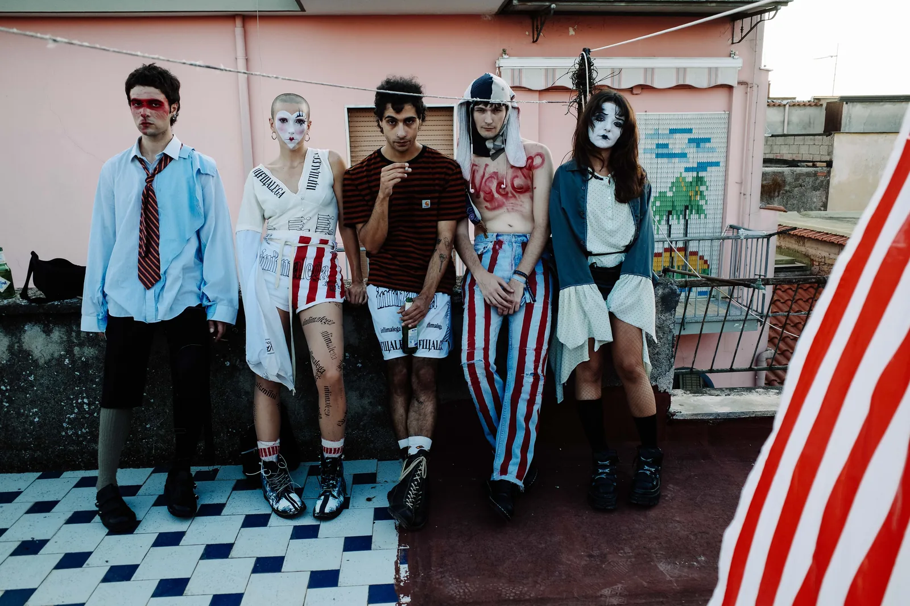
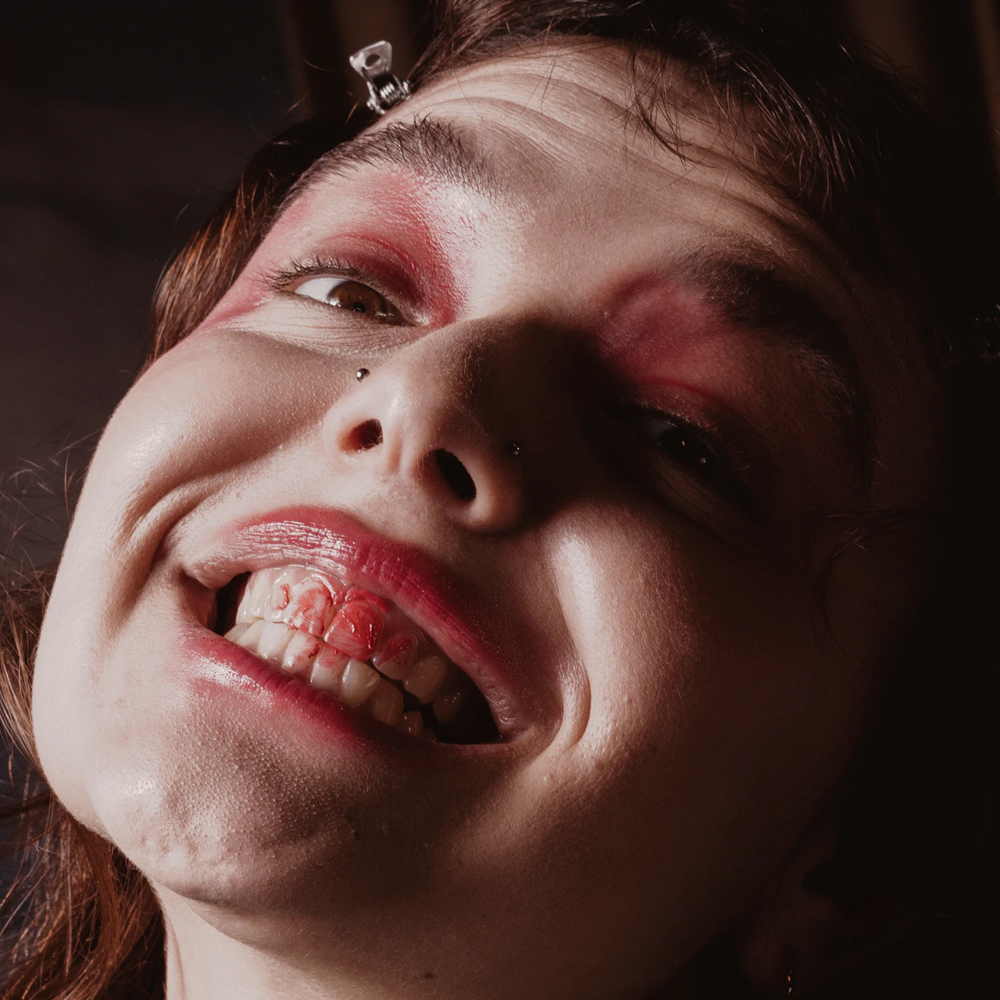

Infimalega

Proximity without lineage
Off-white cotton, intentionally stained






Romantic punk in the urban land.



Vertical red striping




Archive
1/1 UNBUILT ANTI-FASHION — NAPLES 2024

